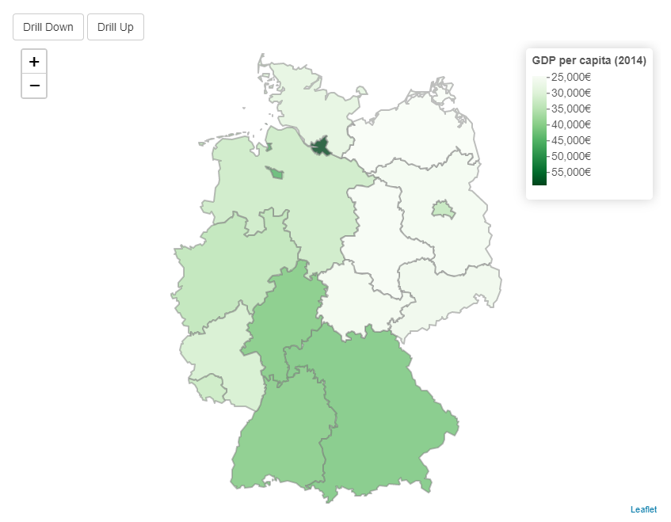
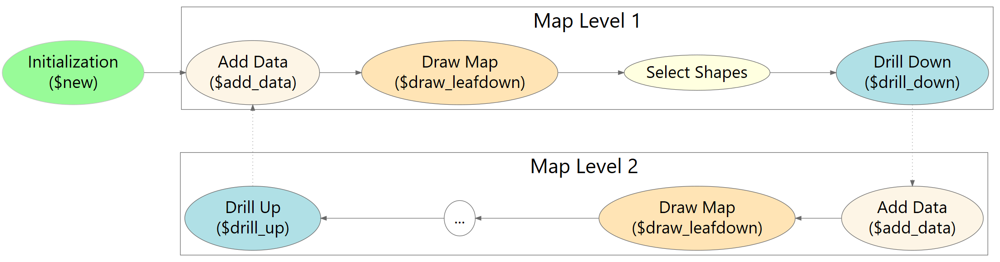

Introduction.RmdIn this article, we would like to give an example of how to create a very simple drilldown map with leafdown.
The goal is to create a map that:

Let’s first load the libraries we are going to use for our app.
library(leafdown)
library(leaflet)
library(shiny)
library(dplyr)
library(shinycssloaders)
library(shinyjs)
library(dplyr)
library(raster)(Note that the shinyjs package is loaded for some automatic warning messages that the leafdown map can return to the user of the shiny app.)
leafdown requires a list of SpatialPolygonsDataFrames (spdfs) for the regions we want to display on our map.
To get these spdfs we can use the getData function of the raster package. For “Germany”, level = 1 contains the spdf for the federal states and level = 2 the spdf for the administrative districts.
If an spdf comes from a different source, it is important that the structure is identical to the spdfs that come from the raster package.
ger1 <- raster::getData(country = "Germany", level = 1)
ger2 <- raster::getData(country = "Germany", level = 2)The spdf for level = 2 does not display all German umlauts correctly. Therefore we adjust some names so that we can assign our data more easily later on.
ger2@data[c(76, 99, 136, 226), "NAME_2"] <- c(
"Fürth (Kreisfreie Stadt)",
"München (Kreisfreie Stadt)",
"Osnabrück (Kreisfreie Stadt)",
"Würzburg (Kreisfreie Stadt)"
)Let’s now create our spdfs_list which we can provide to leafdown in our shiny app. It is important that spdfs_list is ordered such that the spdf of the highest map level (in our case the federal states) is the first list element and so on.
list (spdfs_list)
│
└───spdf (spdf of first map level)
│
└───spdf (spdf of second map level)
spdfs_list <- list(ger1, ger2)For this app, we will use the example data sets that come with the leafdown package. The data.frame gdp_2014_federal_states contains the GPD of 2014 for the federal states and gdp_2014_admin_districts for the administrative districts of Germany.
head(gdp_2014_federal_states)
#> Federal_State GDP_2014
#> 1 Baden-Württemberg 41473
#> 2 Bayern 42226
#> 3 Berlin 34395
#> 4 Brandenburg 25980
#> 5 Bremen 45173
#> 6 Hamburg 58950
head(gdp_2014_admin_districts)
#> Admin_District GDP_2014
#> 1 Wilhelmshaven 40000
#> 2 Herne 22500
#> 3 Schweinfurt 93900
#> 4 Kaufbeuren 32300
#> 5 Peine 20700
#> 6 Kempten (Allgäu) 54500(For more information about the data, please see ?gdp_2014_federal_states or ?gdp_2014_admin_districts respectively)
In this part, we sketch and explain the typical leafdown workflow.

(Please note that the execution of the code snippets in this chapter only works within a shiny app)
As usual for R6 classes, we create a new object of our Leafdown class using the new() method.
For this we have to specify the:
spdfs_list: The list containing the spdfs of both map levels.map_output_id: The output_id we specify in our ui via leafletOutput("<<map_output_id>>")
input: The input from the shiny appjoin_map_levels_by (optional). A named vector with the columns by which the map levels should be joined. In case of two map levels this is set by default to c(“GID_1” = “GID_1”), which is appropriate when ‘Provinces/States’ is the first and ‘Districts’ the second map level. If you use ‘Countries’ as first and ‘Provinces/States’ as second level you have to set it to c("ISO" = "GID_0"). For more information, see the Section Joining map levels in the Multilevel article.
my_leafdown <- Leafdown$new(spdfs_list, map_output_id = "leafdown", input = input)In the next step, we add data to our leafdown object. Using the attribute $curr_data we can retrieve the data of the current map level. At the beginning $curr_data only contains metadata. With metadata, we refer to the data that describes the polygons, such as region names, region IDs, etc. The metadata is automatically set with the spdf_list[[i]]@data where i is the current map level.
metadata <- my_leafdown$curr_data
print(head(metadata))
#> GID_0 NAME_0 GID_1 NAME_1 VARNAME_1 NL_NAME_1
#> 1 DEU Germany DEU.1_1 Baden-Württemberg <NA> <NA>
#> 2 DEU Germany DEU.2_1 Bayern Bavaria <NA>
#> 3 DEU Germany DEU.3_1 Berlin <NA> <NA>
#> 4 DEU Germany DEU.4_1 Brandenburg <NA> <NA>
#> 5 DEU Germany DEU.5_1 Bremen <NA> <NA>
#> 6 DEU Germany DEU.6_1 Hamburg <NA> <NA>
#> TYPE_1 ENGTYPE_1 CC_1 HASC_1
#> 1 Land State 08 DE.BW
#> 2 Freistaat <NA> 09 DE.BY
#> 3 Land State 11 DE.BE
#> 4 Land State 12 DE.BR
#> 5 Freie Hansestadt State 04 DE.HB
#> 6 Freie und Hansestadt State 02 DE.HHNow we can add new columns for variables we want to display on our map to the existing metadata. It is important that the initial metadata remains unchanged and no rows are removed.
new_data <- metadata %>% dplyr::left_join(gdp_2014_federal_states, by = c("NAME_1" = "Federal_State"))After creating our new data set, we give it to our leafdownobject with the $add_data method.
my_leafdown$add_data(new_data)The current data of a leafdown object can be retrieved via the $curr_data attribute.
print(head(my_leafdown$curr_data))
#> GID_0 NAME_0 GID_1 NAME_1 VARNAME_1 NL_NAME_1
#> 1 DEU Germany DEU.1_1 Baden-Württemberg <NA> <NA>
#> 2 DEU Germany DEU.2_1 Bayern Bavaria <NA>
#> 3 DEU Germany DEU.3_1 Berlin <NA> <NA>
#> 4 DEU Germany DEU.4_1 Brandenburg <NA> <NA>
#> 5 DEU Germany DEU.5_1 Bremen <NA> <NA>
#> 6 DEU Germany DEU.6_1 Hamburg <NA> <NA>
#> TYPE_1 ENGTYPE_1 CC_1 HASC_1 GDP_2014
#> 1 Land State 08 DE.BW 41473
#> 2 Freistaat <NA> 09 DE.BY 42226
#> 3 Land State 11 DE.BE 34395
#> 4 Land State 12 DE.BR 25980
#> 5 Freie Hansestadt State 04 DE.HB 45173
#> 6 Freie und Hansestadt State 02 DE.HH 58950To draw the map we use the method $draw_leafdown. The specified arguments in the method are internally handed over to the addPolygons function of leaflet. Therefore attributes like fillColor or opacity can be specified just as for a usual leaflet map.
map <- my_leafdown$draw_leafdown(
fillColor = ~ colorNumeric("Greens", GDP_2014)(GDP_2014)
) The $draw_leafdown method returns a usual leaflet map. This also allows us to add a legend or a background to our map.
map <- map %>%
addLegend(
pal = colorNumeric("Grees", data$GDP_2014),
values = data$GDP_2014
)Let’s now have look at what happens when a user clicks on a region. Internally a leafdown object has an observer for shape_click events. Once a user clicks on a certain region, this region becomes “active” and its boundaries on the map are highlighted. (If the clicked region is already active, it becomes inactive). We can retrieve the data of active regions via the $curr_sel_data attribute. Assuming that the user clicked on Bavaria and Hesse than $curr_sel_data would look as follows:
my_leafdown$curr_sel_data()#> GID_0 NAME_0 GID_1 NAME_1 VARNAME_1 NL_NAME_1 TYPE_1 ENGTYPE_1 CC_1
#> 2 DEU Germany DEU.2_1 Bayern Bavaria <NA> Freistaat <NA> 09
#> 7 DEU Germany DEU.7_1 Hessen Hesse <NA> Land State 06
#> HASC_1 GDP_2014
#> 2 DE.BY 42226
#> 7 DE.HE 41809Note that this attribute is a reactiveValue that allows to update graphs and other elements upon a user click. For more on the connection to other elements please see the following tutorial.
Using the $drill_down method we can now drill down to the admin districts of the active federal states.
my_leafdown$drill_down()This will update the currently active spdf (my_leafdown$curr_spdf) which then only contains polygons and corresponding metadata for regions whose parents were active in the upper (previous) map level. In our case the parents are “Bavaria” and “Hesse”, so only spdfs of admin districts within these federal states will be contained in my_leafdown$curr_spdf.
length(my_leafdown$curr_spdf)#> [1] 2The updated data can then again be retrieved via $curr_data.
my_leafdown$drill_down()
metadata <- my_leafdown$curr_data
head(metadata)#> GID_0 NAME_0 GID_1 NAME_1 NL_NAME_1 GID_2 NAME_2
#> 46 DEU Germany DEU.2_1 Bayern <NA> DEU.2.1_1 Aichach-Friedberg
#> 47 DEU Germany DEU.2_1 Bayern <NA> DEU.2.2_1 Altötting
#> 48 DEU Germany DEU.2_1 Bayern <NA> DEU.2.4_1 Amberg
#> 49 DEU Germany DEU.2_1 Bayern <NA> DEU.2.3_1 Amberg-Sulzbach
#> 50 DEU Germany DEU.2_1 Bayern <NA> DEU.2.6_1 Ansbach
#> 51 DEU Germany DEU.2_1 Bayern <NA> DEU.2.5_1 Ansbach (Kreisfreie Stadt)
#> VARNAME_2 NL_NAME_2 TYPE_2 ENGTYPE_2 CC_2 HASC_2
#> 46 <NA> <NA> Landkreis District 09771 DE.BY.AF
#> 47 <NA> <NA> Landkreis District 09171 DE.BY.AT
#> 48 <NA> <NA> Kreisfreie Stadt District 09361 DE.BY.AM
#> 49 <NA> <NA> Landkreis District 09371 DE.BY.AS
#> 50 <NA> <NA> Landkreis District 09571 DE.BY.AN
#> 51 <NA> <NA> Kreisfreie Stadt District 09561 DE.BY.AN
unique(metadata$NAME_1)#> [1] "Bayern" "Hessen"Just as before we can add new columns for variables we want to display on our map to the existing metadata.
new_data <- metadata %>%
dplyr::left_join(gdp_2014_admin_districts, by = c("NAME_2" = "Admin_District"))
my_leafdown$add_data(new_data)Again, the current data can be retrieved via the $curr_data attribute.
head(my_leafdown$curr_data)#> GID_0 NAME_0 GID_1 NAME_1 NL_NAME_1 GID_2 NAME_2 VARNAME_2
#> 1 DEU Germany DEU.2_1 Bayern <NA> DEU.2.1_1 Aichach-Friedberg <NA>
#> 2 DEU Germany DEU.2_1 Bayern <NA> DEU.2.2_1 Altötting <NA>
#> 3 DEU Germany DEU.2_1 Bayern <NA> DEU.2.4_1 Amberg <NA>
#> 4 DEU Germany DEU.2_1 Bayern <NA> DEU.2.3_1 Amberg-Sulzbach <NA>
#> 5 DEU Germany DEU.2_1 Bayern <NA> DEU.2.6_1 Ansbach <NA>
#> NL_NAME_2 TYPE_2 ENGTYPE_2 CC_2 HASC_2 GDP_2014
#> 1 <NA> Landkreis District 09771 DE.BY.AF 24100
#> 2 <NA> Landkreis District 09171 DE.BY.AT 45200
#> 3 <NA> Kreisfreie Stadt District 09361 DE.BY.AM 50000
#> 4 <NA> Landkreis District 09371 DE.BY.AS 24300
#> 5 <NA> Landkreis District 09571 DE.BY.AN 52500After adding GDP_2014 to our admin district data, we can again draw our map. Note that all non-active parent regions grayed out in the background.
my_leafdown$draw_leafdown(
fillColor = ~ colorNumeric("Blues", GDP_2014)(GDP_2014)
)Using the $drill_up method we can now drill back up to the federal states. Note that the active regions (we selected before we drilled down) are still active.
my_leafdown$drill_down()And again we can draw our map just as usual.
map <- my_leafdown$draw_leafdown(
fillColor = ~ colorNumeric("Blues", GDP_2014)(GDP_2014)
) We can use the keep_zoom() method to keep the current zoom level as well as the current view center of the user after the map is drawn.
map <- my_leafdown$keep_zoom(map, input)
library(leafdown)
library(leaflet)
library(shiny)
library(dplyr)
library(shinyjs)
ger1 <- raster::getData(country = "Germany", level = 1)
ger2 <- raster::getData(country = "Germany", level = 2)
ger2@data[c(76, 99, 136, 226), "NAME_2"] <- c(
"Fürth (Kreisfreie Stadt)",
"München (Kreisfreie Stadt)",
"Osnabrück (Kreisfreie Stadt)",
"Würzburg (Kreisfreie Stadt)"
)
spdfs_list <- list(ger1, ger2)
ui <- shiny::fluidPage(
tags$style(HTML(".leaflet-container {background: #ffffff;}")),
useShinyjs(),
actionButton("drill_down", "Drill Down"),
actionButton("drill_up", "Drill Up"),
leafletOutput("leafdown", height = 600),
)
# Little helper function for hover labels
create_labels <- function(data, map_level) {
labels <- sprintf(
"<strong>%s</strong><br/>%g € per capita</sup>",
data[, paste0("NAME_", map_level)], data$GDP_2014
)
labels %>% lapply(htmltools::HTML)
}
server <- function(input, output) {
my_leafdown <- Leafdown$new(spdfs_list, "leafdown", input)
update_leafdown <- reactiveVal(0)
observeEvent(input$drill_down, {
my_leafdown$drill_down()
update_leafdown(update_leafdown() + 1)
})
observeEvent(input$drill_up, {
my_leafdown$drill_up()
update_leafdown(update_leafdown() + 1)
})
output$leafdown <- renderLeaflet({
update_leafdown()
meta_data <- my_leafdown$curr_data
curr_map_level <- my_leafdown$curr_map_level
if (curr_map_level == 1) {
data <- meta_data %>% left_join(gdp_2014_federal_states, by = c("NAME_1" = "Federal_State"))
} else {
data <- meta_data %>% left_join(gdp_2014_admin_districts, by = c("NAME_2" = "Admin_District"))
}
my_leafdown$add_data(data)
labels <- create_labels(data, curr_map_level)
my_leafdown$draw_leafdown(
fillColor = ~ colorNumeric("Greens", GDP_2014)(GDP_2014),
weight = 2, fillOpacity = 0.8, color = "grey", label = labels,
highlight = highlightOptions(weight = 5, color = "#666", fillOpacity = 0.7)
) %>%
my_leafdown$keep_zoom(input) %>%
addLegend("topright",
pal = colorNumeric("Blues", data$GDP_2014),
values = data$GDP_2014,
title = "GDP per capita (2014)",
labFormat = labelFormat(suffix = "€"),
opacity = 1
)
})
}